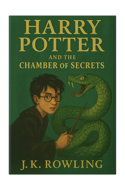

Harry Potter and the Chamber of Secrets
Back to Hogwarts  Harry stood alone in the dark corridor, his heart pounding loudly in his chest. The flickering torchlight cast long, sinister shadows on the stone walls, and the chilling whisper echoed again, slithering through the air like a serpent. "Come... come to me... Let me rip you... Let me tear you..." Harry swallowed hard, his hand tightening on his wand. He could feel the cold seep into his bones as he edged forward, trying to pinpoint where the voice was coming from. It sounded as though it was just around the corner, yet when he turned, the corridor stretched empty before him. Behind him, the castle felt strangely silent — as if it, too, was holding its breath. The portraits lining the walls seemed to watch him warily, their painted eyes flickering with unease. Somewhere far above, the castle clock chimed, the sound muffled by the thick walls. Then, without warning, something gleamed at the edge of his vision — a puddle of water spreading across the stone floor. He stepped closer, and his breath caught in his throat. There, reflected in the water’s surface, was a message scrawled in shimmering red on the wall:“THE CHAMBER OF SECRETS HAS BEEN OPENED. ENEMIES OF THE HEIR, BEWARE.”
A cold dread swept over Harry. He had seen this before — but this time, something was different. The corridor wasn’t empty. At the foot of the message lay a figure — stiff, unmoving, eyes wide with terror. It was Colin Creevey. Harry felt the blood drain from his face. He turned and ran, the chilling whisper still echoing faintly in his ears.
Summary
Harry Potter returns to Hogwarts School of Witchcraft and Wizardry for his second year, despite warnings from a strange house-elf named Dobby, who insists that terrible things will happen if Harry goes back. The year begins with strange occurrences: students and even Filch’s cat, Mrs. Norris, are found petrified (frozen like stone), and mysterious messages appear on the walls, saying “The Chamber of Secrets has been opened. Enemies of the heir, beware.” Legend has it that the Chamber of Secrets was created by Salazar Slytherin, one of the founders of Hogwarts. It is said to house a monster that only his heir can control, and that the Chamber would open one day to rid the school of Muggle-born students (those born to non-magical families). Harry, along with his friends Ron and Hermione, tries to solve the mystery. Harry starts hearing a strange voice that no one else can hear, leading him to believe he might somehow be connected to the attacks. Meanwhile, suspicion falls on various people, including Draco Malfoy and even Harry himself. Hermione is eventually petrified too, but before that, she discovers a vital clue: the monster in the Chamber is a Basilisk, a giant serpent. Harry and Ron learn that Ginny Weasley, Ron’s sister, has been taken into the Chamber. They follow clues that lead them to its hidden entrance in Moaning Myrtle’s bathroom. Inside, Harry faces Tom Riddle — who turns out to be a memory of the young Voldemort, preserved in a diary. Riddle reveals that he is Slytherin’s heir and has been controlling the Basilisk through Ginny. Harry fights and kills the Basilisk with the help of Fawkes, Dumbledore’s phoenix, and destroys the diary, saving Ginny and ending the threat. In the end, Dobby is freed from his cruel masters (the Malfoy family), and the school year ends with Hogwarts safe once again.
back to top